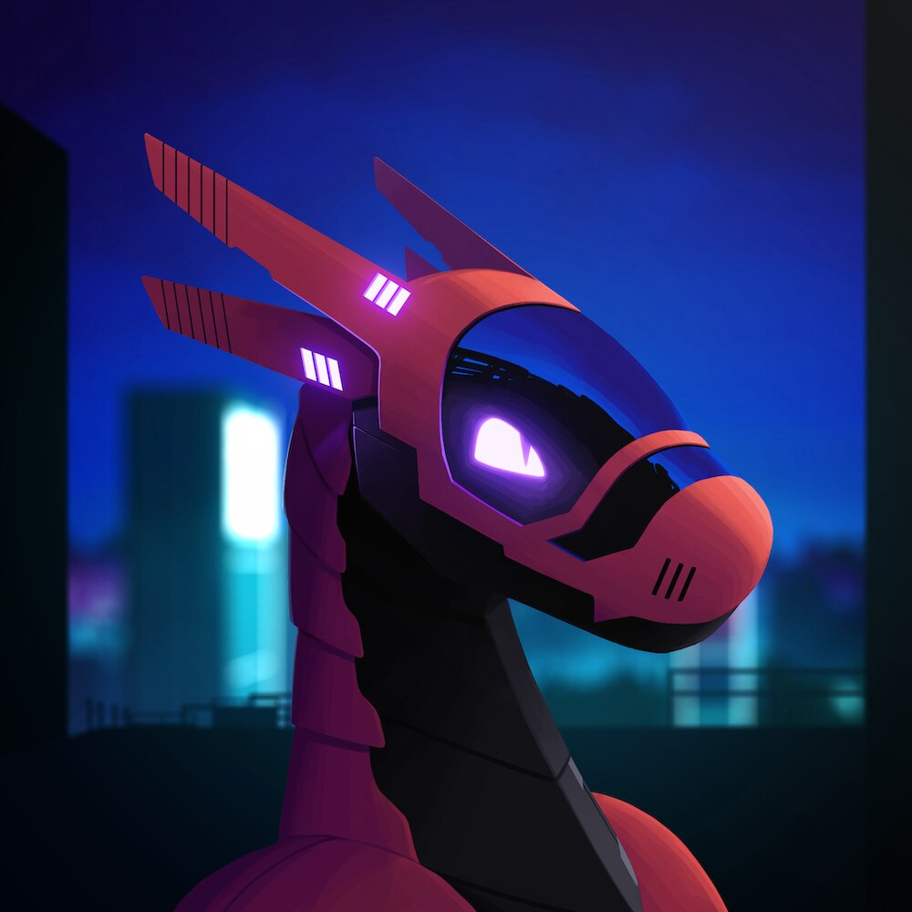
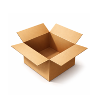
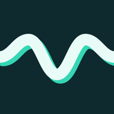
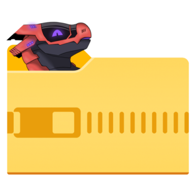
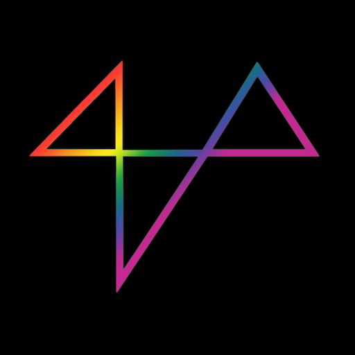

Ixion
@illixion
About
Infrastructure engineer for a living, technical writer and FOSS developer on the side, sometimes a photographer.
I'm always working on something new, follow me on social media of your choice to stay up-to-date!
Sponsors
Apps
Apps I make for Apple Vision Pro, iPhone, iPad and Mac. They aren't on the App Store yet. The iPhone and iPad builds install through AltStore or SideStore from apps.illixion.com.
-

Convolution
Photo, video and film library
One library for your Photos, a Stash, Nextcloud or Jellyfin server, or local files. Films keep their object audio, and on Vision Pro it turns flat photos and videos into 3D.
-

Longwave
Remote desktop and game streaming
VNC remote desktop, game streaming from a Sunshine host and an SSH terminal for the computers you own. On Vision Pro the desktops sit in the room as windows you place.
-
Worldcast
Podcast listener for one person
A small Node.js server you run keeps your subscriptions and progress. A web app and the Apple clients play from it.
Running
-

synth.zip
An open, community-oriented Mastodon server running on Pleroma.
-
blog.illixion.com
My technology blog. Mostly a notepad I come back to when I need something, shared in case it helps someone else.
-
ssh.illixion.com
Self-hosted, end-to-end-signed SSH key sync for my machines.
Open source
Vibrancy Continued
Acrylic, Mica and glass window effects for VS Code.
RoboFrame
A digital photo frame with image search, display control and optional Home Assistant integration.
Annemone
Control the RGB lighting of an Anne Pro 2 keyboard from Node.js.
Stream Deck Animated Screensaver
Turn a video into a Stream Deck preset that plays as a screensaver.
root-my-webos-tv
Proof of concept for CVE-2023-6319 on LG webOS TVs.
WebOverlay
A configurable, web-based HUD overlay for macOS.
Macrobot
A lightweight macro recorder and player for macOS.
web-yt-dlp
A web front end for yt-dlp that works with iOS Shortcuts.
Archived
-

Kataprints
An online clothing and accessory store based in Riga, Latvia, where purchases supported artists directly. I ran all of the technical side.


Alternate versions

Paraa, without depth of field

nursesenpai, transparent

Shiuk, outline

Shiuk, transparent


PGP key
For mail to illixion@illixion.com and for checking things I've signed. GnuPG can fetch it straight from this domain:
gpg --locate-keys illixion@illixion.com- Fingerprint
AAC5 5785 2510 A3E6 CF8A D178 AC64 944A 2D46 AA61- Algorithm
- Ed25519, Cv25519 for encryption
- Created
- 28 November 2022
Show the key block
-----BEGIN PGP PUBLIC KEY BLOCK-----
mDMEY4TLfRYJKwYBBAHaRw8BAQdApLdgNqk0tKLy40G3laVeHOaAtnWwgBPUKoIL
zYNseNu0HUl4aW9uIDxpbGxpeGlvbkBpbGxpeGlvbi5jb20+iJMEExYKADsWIQSq
xVeFJRCj5s+K0XisZJRKLUaqYQUCY4TLfQIbAwULCQgHAgIiAgYVCgkICwIEFgID
AQIeBwIXgAAKCRCsZJRKLUaqYU18AQDy8M+/4a15EvcdExKWKyrkiw67MS/2fPKE
vkijH2f9dwEAwbg8cCBwqmPT0FFkVOpeEb8n+4eFNGELgd71Tt0mNwK4MwRjhMt9
FgkrBgEEAdpHDwEBB0BiemJEW0e45iZGnnLovUaqsqHIs1o+Ns0Rd7rDKsgoZYh4
BBgWCgAgFiEEqsVXhSUQo+bPitF4rGSUSi1GqmEFAmOEy30CGyAACgkQrGSUSi1G
qmH32gEA6QE+0Wm3JRrOQc921kp3LYJC2beFX16IrHXAV5pSrQoBAL5XWUYSFxI4
v/CGs3zHz841tobQNV5Lf96eXSCkmJQIuDgEY4TLfRIKKwYBBAGXVQEFAQEHQH6E
X/QSNWiyruSdunVhA4BF21wnRxn1DVhFDsRqv4tOAwEIB4h4BBgWCgAgFiEEqsVX
hSUQo+bPitF4rGSUSi1GqmEFAmOEy30CGwwACgkQrGSUSi1GqmGJIAEAjfZA3x+h
c05q9HozOE37H/6CoMXD8N4FbGbNQgLci5AA/3wrgYP+sGTI+r/XYGdv6tdTMbTh
/vc3EoXiUvqQZbgM
=QtGD
-----END PGP PUBLIC KEY BLOCK-----Every commit to this site's repository is signed, so you can check that the key hasn't been swapped in the history of pgp.txt.
SSH keys
My public SSH keys, and the signed sync that keeps them current on my machines, are at ssh.illixion.com.